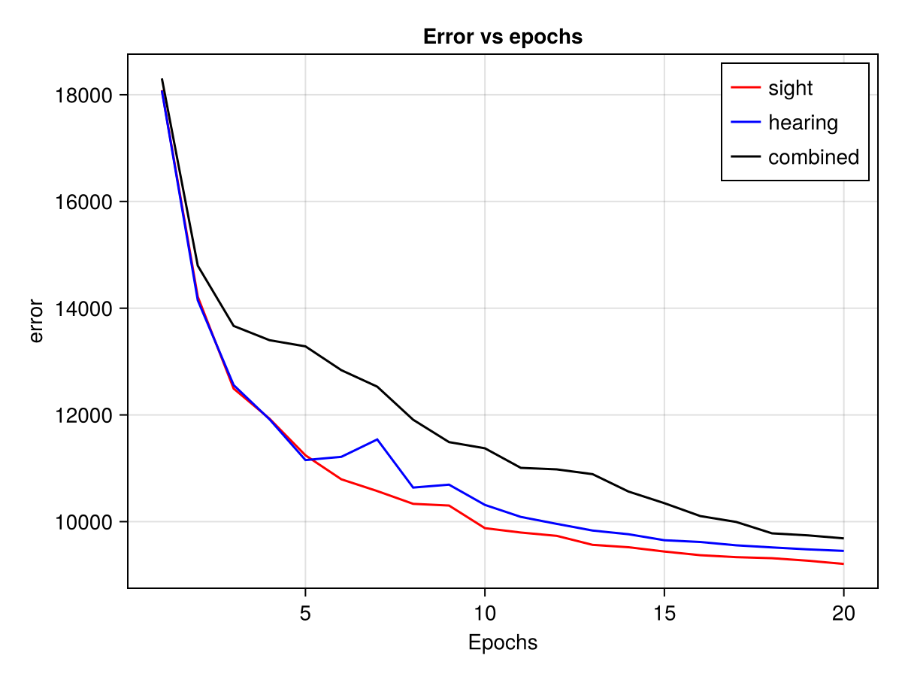

How to change stimuli
Overview
This notebook implements a deep recurrent encoder for analyzing sensory stimuli (sight, hearing, and combined) using the Lux library in Julia. The data is simulated and then trained under three conditions: sight-only, hearing-only, and combined stimuli. Results are plotted to show the differences in predictions. The executable pluto notebook can be found in the research folder under stimulieffect.jl
Setup
Activating Environment
using Pkg
Pkg.activate("../../../.") Activating project at `~/work/DeepRecurrentEncoder.jl/DeepRecurrentEncoder.jl/docs`Activates the Julia environment located at ../../docs.
Importing Packages
using Random
using PlutoLinks
using Lux
using LuxCUDA
using CairoMakie
using Statistics
using StatsModels
using Plots
using StableRNGs
using DataFramesLoads the required libraries for neural network modeling, plotting, and statistical analysis.
Importing Custom Encoder
using DeepRecurrentEncoderImports the DeepRecurrentEncoder module with automatic reloading of changes.
Loading Test Data
include("../../../testdata.jl")simulate_data (generic function with 1 method)Loads the test dataset from testdata.jl.
Setting Random Seed
rng = StableRNG(1)StableRNGs.LehmerRNG(state=0x00000000000000000000000000000003)Define a random number generator for the data generation module
Defining Formulas
f_hearing = @formula 0 ~ 0 + hearing
f_sight = @formula 0 ~ 0 + sight
f_combined = @formula 0 ~ 0 + sight + hearingFormulaTerm
Response:
0
Predictors:
0
sight(unknown)
hearing(unknown)Defines formulas to model the effect of sight, hearing, and combined stimuli on the response variable.
Simulating Data
data, evts = simulate_data(rng, 100; sfreq=100, sight_effect=1);([-0.7732866001573875 -1.249309542840107 … 0.12804501295179 0.07586465930365208; -0.3707674136577286 -2.3258444657205173 … -1.1481305554189039 -0.8264602337804219; … ; 0.24457644927180006 0.1450746289602736 … 0.18525047829348484 -0.20269763198898041; -0.05483451745365445 0.9858990591846297 … -0.3941893008220958 -0.6107328944838427;;; 0.2650548505658405 -0.5116719633133284 … -0.5769251591145167 0.5714882615737539; -0.06598670957043679 -0.45684140906053744 … -0.38704625300694284 1.4459067084394759; … ; 0.20076388305257153 1.2020956461614722 … 0.744880875172774 0.12728118596406393; -0.1159675461581826 1.2363930497733207 … 0.7594136756433337 -0.4125993831076161;;; 0.46688207860739644 0.3107638982524966 … 0.24408987125169943 1.2185550802316418; 0.4931815022520317 0.1324888865622771 … 0.2831782963369644 0.33945795209068724; … ; -0.7824197621259272 -0.808295679924207 … 1.2331687558559434 -0.12736294665314463; -0.35894132482466956 -0.9923915388695064 … 1.6423177392121897 -0.09183325398111679;;; … ;;; -0.6637405733165488 -0.5544330051946805 … -1.3962948403761528 -1.3045098613061545; -1.1948865851377417 -0.2834405072107876 … -0.5324770591242352 -1.4925746917726554; … ; -1.2214592013357517 -0.22889422853356514 … -1.0092431062531109 0.9233504474618527; -0.7124911635899759 -0.13901228522026526 … 0.061715313054939464 0.3140866242955118;;; -0.36513416763188733 -0.5729419205858761 … 0.8054931261053487 1.7298816383095696; -0.6064163426438454 -0.5530531359670239 … 0.3316172735091831 1.7631644230805417; … ; -0.4416517677414092 0.595224632981558 … 1.2334422316899238 -0.566291661892807; -1.2333599942934161 0.6411195331314049 … 0.9373548278767684 -1.2091292269054479;;; 2.796321430127752 0.4841110225132616 … -0.43703963692891046 0.26029769925268204; 2.4619565577951454 1.1093556484296216 … -0.3013200778347517 0.43998021166017715; … ; 0.4917889114864597 -0.04633054943336971 … 1.1977977526278927 0.529994021748412; 0.470976162839551 -0.3366115676111905 … 0.35966075194249364 0.9642872555070318], 400×3 DataFrame
Row │ hearing sight latency
│ String String Int64
─────┼──────────────────────────
1 │ silent red 154
2 │ loud red 306
3 │ silent blue 460
4 │ loud blue 613
5 │ silent red 763
6 │ loud red 913
7 │ silent blue 1063
8 │ loud blue 1215
⋮ │ ⋮ ⋮ ⋮
394 │ loud red 59881
395 │ silent blue 60031
396 │ loud blue 60181
397 │ silent red 60335
398 │ loud red 60485
399 │ silent blue 60636
400 │ loud blue 60787
385 rows omitted)Simulates data with a customizable sight effect.
Training Models
Enable/Disable GPU usage.
use_gpu = falsefalseEach block trains a DeepRecurrentEncoder model for each stimulus type. The model is trained for 20 epochs with a learning rate of 0.01 and a batch size of 256.
Training with Sight Stimulus
dre_sight, ps_sight, st_sight, loss_epoch_data_sight, loss_epoch_opt_data_sight = fit(DRE, Float32.(data[:, 1:end÷2*2, :]) |> x -> use_gpu ? CuArray(x) : x, f_sight, evts; n_epochs=20, lr=0.01, batch_size=256, hidden_chs=100)
loss_test_opt_sight, y_pred_sight = DeepRecurrentEncoder.test(dre_sight, (Float32.(data[:, 1:end÷2*2, :]) |> x -> use_gpu ? CuArray(x) : x), f_sight, evts, ps_sight, st_sight; subset_index=1:10, loss_function=mse)(9107.213f0, Float32[0.05664207 0.10614964 … 0.040756714 0.03945009; -0.35806996 -0.106212124 … 0.6422556 0.78027713; … ; 0.20661715 0.29861546 … 0.034302097 -0.07587669; 0.15231545 0.17653808 … 0.065231115 0.021625567;;; 0.159307 0.1526162 … 0.16330609 0.22333778; -0.27638072 0.19262825 … 1.1390942 1.0283842; … ; 0.21615833 0.3058876 … 0.039976023 -0.08262946; 0.1586661 0.18232507 … 0.06458125 0.014836114;;; -0.52330947 -0.25763622 … -0.64729506 -0.5888803; -1.1241462 -0.9592533 … -0.6784899 -0.930567; … ; 0.32123607 0.2291633 … 0.05273356 -0.0902663; 0.28230998 0.28291735 … 0.03629886 -0.08002761;;; 0.033214584 0.15444922 … 0.25520816 0.3072302; 0.41187355 0.22700514 … 1.1791629 1.0854863; … ; 0.32922533 0.23623854 … 0.0520023 -0.09160324; 0.28574392 0.2860834 … 0.034927238 -0.081622966;;; -0.31038764 -0.2577937 … 0.04999974 -0.07758848; -0.07278886 -0.16510418 … 0.55717266 0.66595894; … ; 0.22668123 0.31480926 … 0.04490931 -0.089442715; 0.16539338 0.18837088 … 0.06394619 0.008156601;;; -0.031385586 -0.21949533 … 0.07895437 0.05016644; -0.12305715 -0.14053777 … 0.37799567 0.21128045; … ; 0.21467376 0.30483508 … 0.03897785 -0.081236504; 0.15816206 0.18181 … 0.064381495 0.015941378;;; 0.45679757 0.511583 … 0.7144324 0.7066176; 0.78393775 0.9608166 … 1.195429 0.73834145; … ; 0.35137275 0.25692087 … 0.050598964 -0.09310943; 0.29704913 0.2937711 … 0.030571796 -0.084726274;;; 0.59922385 0.46579227 … -0.052542146 -0.57254267; -0.66049933 -0.6238594 … -0.731795 -0.73846513; … ; 0.31629106 0.22486144 … 0.053400096 -0.090649046; 0.27928084 0.28123248 … 0.037640028 -0.07947828;;; 0.38643873 0.53838426 … 0.87111986 0.78154945; 0.2720241 0.50479865 … 1.2908397 1.1612467; … ; 0.20685941 0.29851013 … 0.03492523 -0.07640398; 0.15304682 0.1771647 … 0.06492041 0.020873021;;; 0.11865005 -0.00027383864 … 0.16879421 0.36139357; 0.06002032 0.18981533 … -0.07447016 0.38190508; … ; 0.21522576 0.3051871 … 0.039333727 -0.08180505; 0.15820858 0.1819004 … 0.06452033 0.015544001])Training with Hearing Stimulus
dre_hearing, ps_hearing, st_hearing, loss_epoch_data_hearing, loss_epoch_opt_data_hearing = fit(DRE, Float32.(data[:, 1:end÷2*2, :]) |> x -> use_gpu ? CuArray(x) : x, f_hearing, evts; n_epochs=20, lr=0.01, batch_size=256, hidden_chs=100)
loss_test_opt_hearing, y_pred_hearing = DeepRecurrentEncoder.test(dre_hearing, (Float32.(data[:, 1:end÷2*2, :]) |> x -> use_gpu ? CuArray(x) : x), f_hearing, evts, ps_hearing, st_hearing; subset_index=1:10, loss_function=mse)(9396.925f0, Float32[0.022211056 0.0029136539 … 0.07159784 0.0041776635; -0.10892351 0.094531 … 0.40971553 0.60728174; … ; 0.12842344 0.11747897 … -0.004851848 0.13936433; 0.15272766 0.045698207 … 0.08952298 0.09429476;;; 0.17021158 0.34370145 … 0.6115345 0.5682888; 0.039219424 0.33466297 … 0.75349236 1.358304; … ; 0.07621774 0.065663606 … 0.04185361 0.062414672; 0.10313271 0.036199003 … 0.081594884 0.057974357;;; -0.39270258 -0.15822628 … -0.7470112 -0.82314366; -0.76417613 -0.9252607 … -0.85911787 -0.8039027; … ; 0.13187551 0.11907224 … -0.0033207797 0.13879569; 0.15489891 0.046804298 … 0.0905129 0.09278497;;; 0.24044012 0.40126848 … 0.3916394 0.10094772; -0.03221126 0.2623214 … 1.2061281 0.7626137; … ; 0.07861886 0.06795714 … 0.042635895 0.061512884; 0.10414405 0.036571436 … 0.082058206 0.056696843;;; -0.0885742 -0.13617143 … 0.0453549 -0.0865622; -0.06892298 0.060473323 … 0.63875496 0.62063885; … ; 0.12737307 0.11521893 … -0.005066756 0.14077564; 0.15370092 0.046333678 … 0.08990121 0.09372303;;; 0.101268716 0.18580204 … -0.20403749 -0.2594223; -0.103773326 0.1315825 … 0.222582 -0.23613057; … ; 0.09443076 0.086880125 … 0.043452892 0.056565527; 0.10940507 0.042379223 … 0.08220128 0.06118123;;; 0.39953524 0.6035697 … 0.7712791 0.6690575; 0.5599346 0.8685889 … 0.68023735 0.8384035; … ; 0.12174462 0.10932435 … -0.006614119 0.14294925; 0.15389597 0.047029473 … 0.089971215 0.09319343;;; 0.2905625 0.66898316 … -0.4088126 -0.27761444; -0.55523163 -0.33463648 … -0.8103397 -0.7964246; … ; 0.07560941 0.0648305 … 0.042009328 0.062431965; 0.103227586 0.036062077 … 0.08158014 0.05671188;;; 0.41320348 0.53904074 … 0.87422526 0.8526331; 0.38571632 0.6540993 … 1.1729558 1.2078092; … ; 0.12497469 0.116324745 … -0.0049194694 0.13903947; 0.14856905 0.04262591 … 0.08824976 0.09643304;;; -0.21932904 -0.367357 … 0.13631457 0.44380274; -0.10183926 -0.23016205 … 0.5149767 0.42801547; … ; 0.10165611 0.094282866 … 0.04444832 0.054303583; 0.111960456 0.04509764 … 0.08231188 0.06278458])Training with both Stimuli
dre_combined, ps_combined, st_combined, loss_epoch_data_combined, loss_epoch_opt_data_combined = fit(DRE, Float32.(data[:, 1:end÷2*2, :]) |> x -> use_gpu ? CuArray(x) : x, f_combined, evts; n_epochs=20, lr=0.01, batch_size=256, hidden_chs=100)
loss_test_opt_combined, y_pred_combined = DeepRecurrentEncoder.test(dre_combined, (Float32.(data[:, 1:end÷2*2, :]) |> x -> use_gpu ? CuArray(x) : x), f_combined, evts, ps_combined, st_combined; subset_index=1:10, loss_function=mse)(9695.898f0, Float32[0.02561209 0.03771787 … 0.053827573 -0.04457318; -0.6180567 -0.29082903 … 0.78091294 0.6091516; … ; -0.08610476 -0.040565193 … 0.08269155 0.109459415; -0.1972193 -0.19370188 … 0.01801103 0.12742437;;; 0.29242733 0.47067025 … 0.4827623 0.39445114; 0.66567856 0.24310173 … 0.8327675 1.2140069; … ; -0.10076885 0.05113256 … 0.032740407 -0.024216816; -0.18905328 -0.15653512 … -0.002104018 0.009346023;;; -0.059615552 0.1451962 … -0.5870906 -0.6039748; -0.16677462 -0.2814723 … -0.74726164 -0.7384489; … ; 0.092794165 0.12660891 … 0.067206345 0.055585176; -0.14394748 -0.13731977 … 0.0074540153 0.11268535;;; 0.2804363 0.33532104 … 0.25510627 0.44388634; 0.6971701 0.31653184 … 0.6926258 1.0193335; … ; -0.19418553 -0.039963305 … 0.03721753 0.0030300617; -0.21567774 -0.18808073 … 0.004675622 0.017499238;;; -0.13579056 -0.0997263 … -0.07049268 -0.11810928; -0.22694069 -0.2510228 … 0.21710077 0.22469167; … ; 0.16576701 0.19553271 … 0.058947105 0.03464298; -0.12166297 -0.11370322 … 0.0020816363 0.10717599;;; 0.21983992 0.20105605 … -0.2436343 -0.30256504; 0.38883618 0.2253602 … -0.31079915 -0.2219153; … ; -0.17273198 -0.017789917 … 0.036341593 -0.003839925; -0.20945606 -0.18018107 … 0.0032277992 0.015125513;;; 0.6022827 0.6006986 … 0.62962234 0.9160356; 0.65946704 0.6930352 … 0.56790274 0.7065283; … ; 0.3841444 0.40761256 … 0.03523421 -0.032531872; -0.053581342 -0.03992723 … -0.013179093 0.08895287;;; 0.28776285 0.5167385 … -0.2186532 -0.17666203; -0.15194653 -0.3476064 … -0.95208216 -1.0274765; … ; -0.06872063 0.08070232 … 0.03216285 -0.0326934; -0.18003792 -0.14645894 … -0.0040048733 0.007170126;;; 0.8477963 0.77794194 … 0.6622826 0.8348029; 0.7797824 0.9060781 … 0.47590682 0.659519; … ; 0.4484127 0.47144285 … 0.027704556 -0.051037893; -0.033574753 -0.018298475 … -0.01824239 0.08390559;;; 0.31429744 0.30788907 … 0.13418472 0.061177522; 0.68265575 0.646707 … -0.056546926 -0.019824013; … ; -0.15688011 -0.0029660482 … 0.03559263 -0.008184716; -0.20501035 -0.17511366 … 0.0021015382 0.013676867])(Similar blocks exist for hearing and combined stimuli.)
Results Summary
df = DataFrame(
Stimulus = ["Sight", "Hearing", "Combined"],
Training_Loss = [loss_epoch_data_sight[1][end], loss_epoch_data_hearing[1][end], loss_epoch_data_combined[1][end]],
Testing_Loss = [loss_test_opt_sight[1], loss_test_opt_hearing[1], loss_test_opt_combined[1]],
R²_Score = [mean(loss_epoch_opt_data_sight[1]), mean(loss_epoch_opt_data_hearing[1]), mean(loss_epoch_opt_data_combined[1])]
)| Row | Stimulus | Training_Loss | Testing_Loss | R²_Score |
|---|---|---|---|---|
| String | Float64 | Float32 | Float64 | |
| 1 | Sight | 18086.4 | 9107.21 | 0.000234642 |
| 2 | Hearing | 18077.7 | 9396.92 | 0.000237679 |
| 3 | Combined | 18305.4 | 9695.9 | 0.000160602 |
Prints the summary of training loss, testing loss, and R² score for each trained model.
Error vs Epochs
f_ = Figure()
ax1_ = Axis(f_[1,1], xlabel="Epochs", ylabel="error", title="Error vs epochs")
lines!(ax1_, loss_epoch_data_sight, label="sight", color=:red)
lines!(ax1_, (loss_epoch_data_hearing), label="hearing", color=:blue)
lines!(ax1_, (loss_epoch_data_combined), label="combined", color=:black)
axislegend(ax1_)
f_
Conclusion
- Three models were trained to predict sensory responses to sight, hearing, and combined stimuli.
- Results show varying loss and R² scores for each stimulus, with combined stimuli performing differently.
- Visualizations provide insights into predictions and training performance.